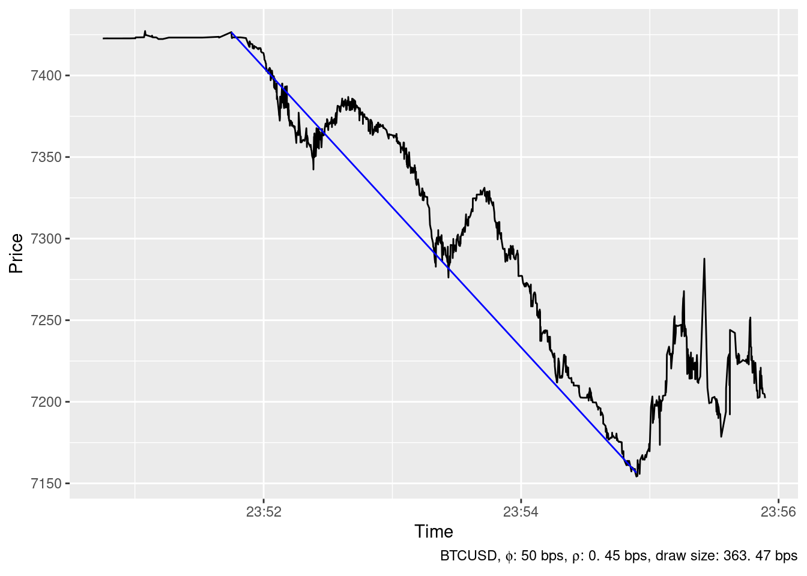
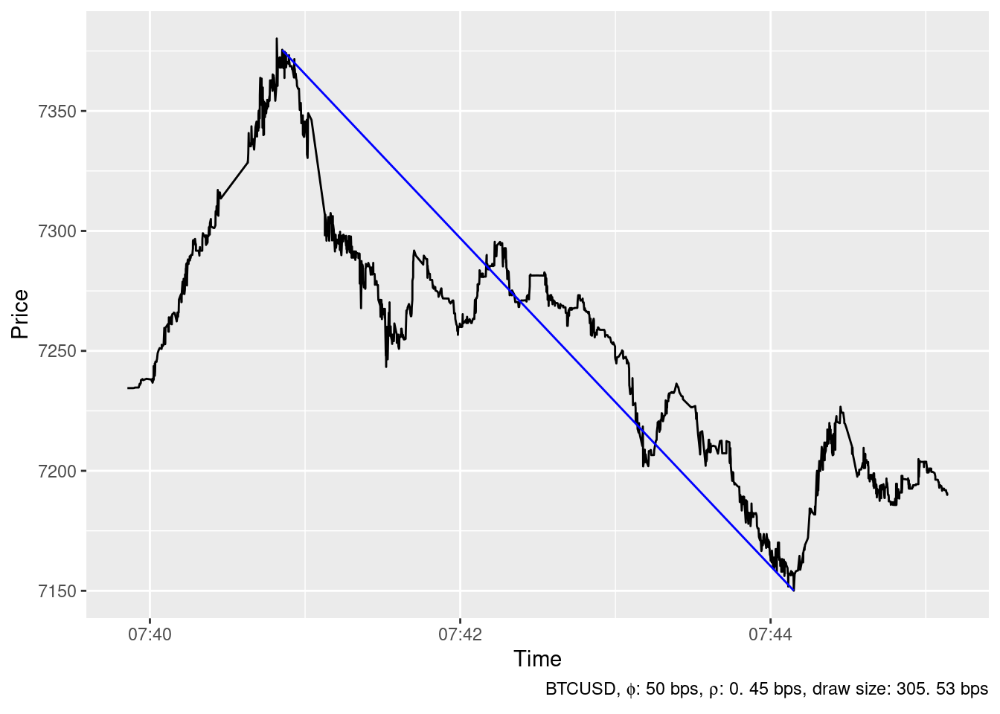
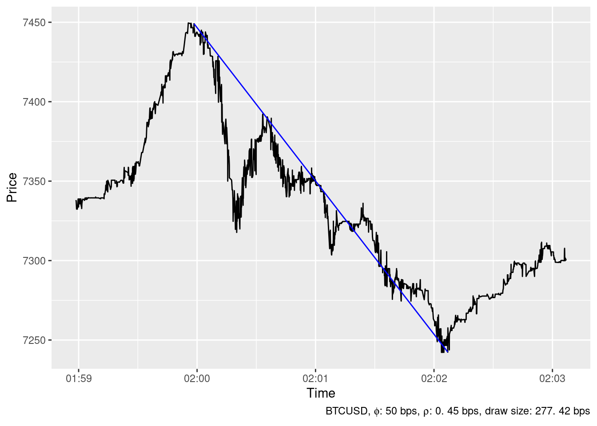
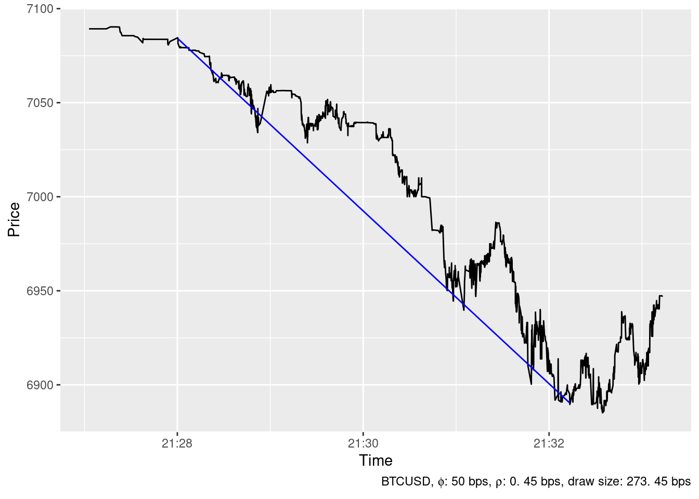
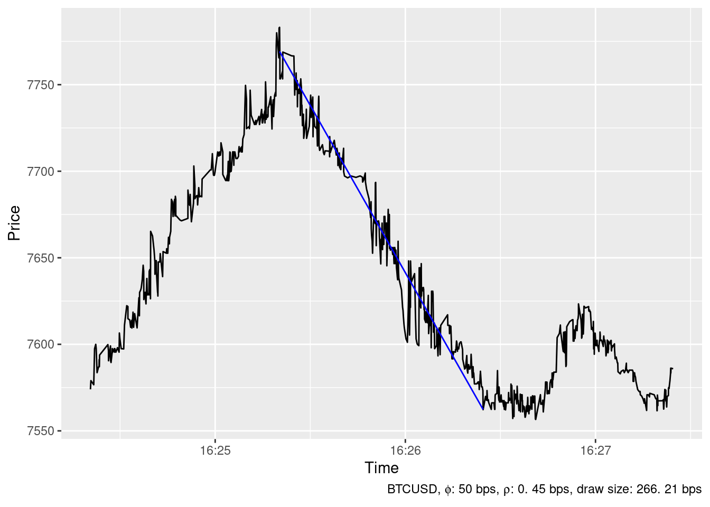
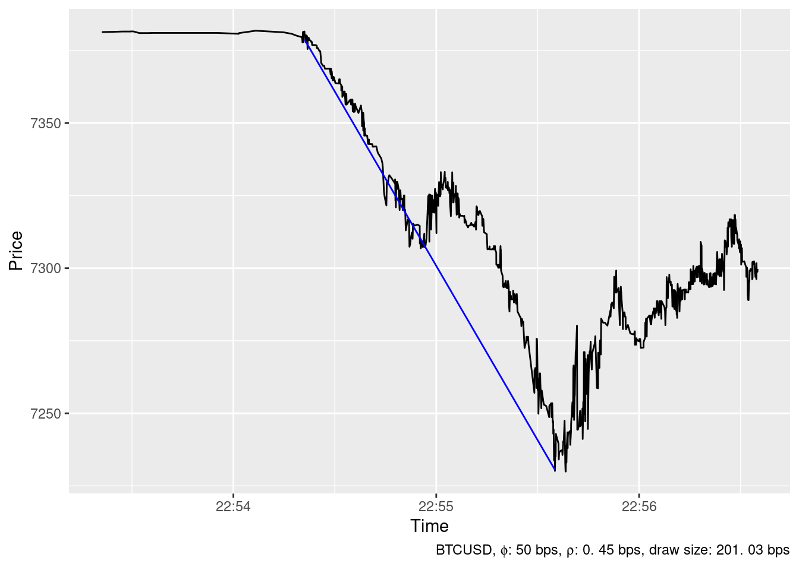
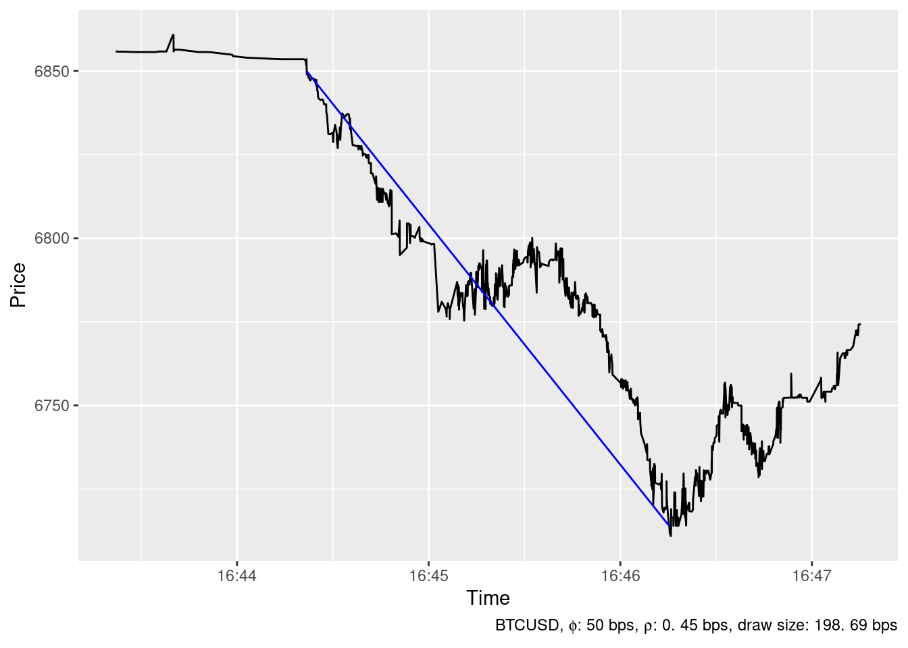
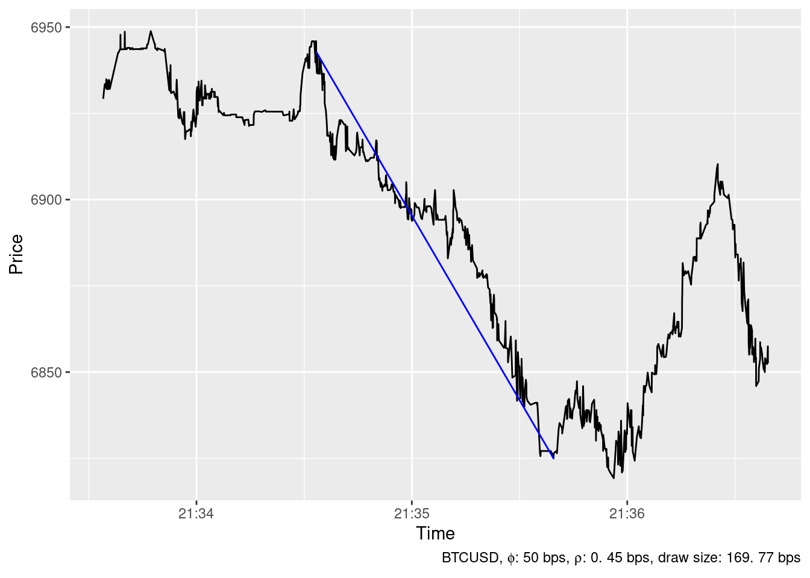
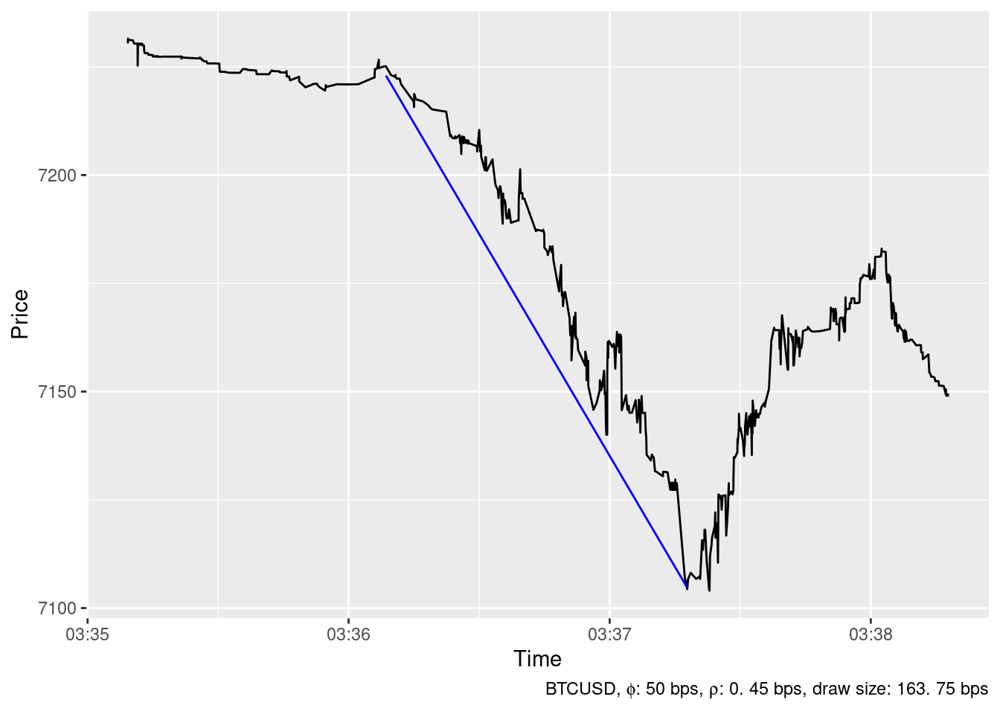

How to locate the largest price spikes
Petr Fedorov
2020-02-04
The problem of finding interesting moments in a time series
Not all hours are created equal. Some of them are boring for price oscillates with a small amplitude around the same value. Some other are interesting for the amplitude of the price’s oscillations increases several-fold for a short time interval. Yet another hours are really thrilling for the price suddenly jumps and remaines pegged at the noticeably higher or lower level. Several examples of boring, interesting and thrilling hours are shown below.
Boring
Figure 1: A boring moment
Interesting
Figure 2: An interesting moment
Thrilling
Upward
Figure 3: The price has increased for more than 7% in just four minutes
Downward
Figure 4: A thrilling downward spike
Interesting and thrilling hours are uncommon. For example the timeseries of BTCUSD price at Bitstamp in December 2019 contains only 14 hours with price spikes exceeding 1% and 730 boring ones. Thus an automated tool is desirable in order to find eventful hours effortlessly.
An automated detection of eventful periods
A naive approach
The first thought which probably comes to someone’s mind is to look for hours during which the price change calculated as highest price minus lowest price exceeded some reasonable threshold, say, 2.5%. All such hours in December 2019 are visualised at figure 5. We can find among them the thrilling hours from figures 3 and 4 and some other interesting hours too.

Figure 5: Hours in December 2019 during the mid-price change of BTCUSD at Bitstamp exceeded 2.5%. Not all of them are thrilling. Furthermore, some of them are not event interesting.
But if we try to locate spikes more precisely and choose the shorter duration of the period, the outcome worsens. Figure 6 shows all 5-minutes intervals in December during which BTCUSD the price changed has exceeded the same threshold of 2.5%. Note that there are (i) few of them and (ii) none of them shows a large spike.
Figure 6: All 5-minutes interval in December 2019 during which the mid-price change of BTCUSD at Bitstamp exceeded 2.5%. There are few of them and there are no large spikes among them
The reason of that will become clear if you look at figure 7 where we’ve decomposed the large upward spike shown in figure 3 above into twelve five-minutes periods. Since the large spike passes through the boundary between two intervals, the spike was simply cut into two smaller ones by the boundary.
Figure 7: It is difficult to recognize the largest BTCUSD price spike in December 2019 when price changes are decomposed into 5-minutes intervals
Jump testing
According to the recent review (Mukherjee et al. 2019)
The existence of jumps in financial markets is obvious, which has led many researches to develop techniques which can test for jumps. Jump diffusion is pivotal in analyzing asset movement in financial econometrics and developing jump tests to identify jumps has been the focus for many theoretical econometricians in past few years.
The review mentions six tests for the existense of jumps. But only one of them, namely (Lee and Mykland 2008) is designed to detect the exact timing of jumps at the intra-day level so we reproduce it here.
The statistics \(\mathcal{L}(i)\) which tests at time \(t_i\) whether there was a jump of price \(P(t)\) from \(t_{i-1}\) to \(t_i\) is defined as \[ \mathcal{L}(i) \equiv \frac{\log P(t_i)/P(t_{i-1})}{\widehat{\sigma(t_i)}} \] where \(\widehat{\sigma(t_i)}\) is so called realized bipower variation defined as
\[ \widehat{\sigma(t_i)}^2 \equiv \frac{1}{K-2} \sum_{j=i-K+2}^{i-1}|\log P(t_j)/P(t_{j-1})||\log P(t_{j-1})/P(t_{j-2})| \]
For the window size \(K\) the authors suggest value \(K=270\) when \(\Delta t = t_j - t_{j-1}\) equals to 5 min and that the probability of no jump at \(t_i\) is less than 1% if the inequality (1) holds:
\[ T(i) \equiv \frac{|\mathcal{L}(i)| - C_n}{S_n} > 4.6001 \tag{1} \] where \[ \begin{eqnarray} C_n & = & \frac{2 \log n}{c} - \frac{\log \pi + \log(\log n)}{2c(2\log n)^{1/2}} \\ S_n & = & \frac{1}{c(2\log n)^{1/2}} \\ c & = & \sqrt{2}/\sqrt{\pi} \end{eqnarray} \] Here we assume that we correctly understand that \(n\) means the number of observations per day so in our case it is \(24 \times 60/5=288\)
The table 1 shows starting times of ten 5-minutes intervals having highest value of \(T(i)\) statistic.
| Time | T_i |
|---|---|
| 2019-12-04 16:20:00 | 120.5 |
| 2019-12-16 21:30:00 | 48.4 |
| 2019-12-06 20:50:00 | 18.1 |
| 2019-12-22 19:05:00 | 17.8 |
| 2019-12-04 23:50:00 | 2.5 |
| 2019-12-22 00:30:00 | 1.3 |

Formally speaking, test shows that there were only four jumps of BTCUSD price at Bitstamp in December 2019. Note that the value of \(T(i)\) diminishes very fast, so even at 5% level there will be only four jumps detected.
Figure 8 shows an example of jump which was not detected by the test. The reason is rather clear - everything has happened within the 5-mins interval.
Figure 8: This jump was not detected by the test because everything has happened within 5-minutes interval.
The authors claim:
For simplicity, this article assumes that observation times are equally spaced: \(\Delta t = t_i − t_{i−1}\). This simplified assumption can easily be generalized to non-equidistant cases by letting \(\max_i (t_i − t_{i−1}) \rightarrow 0\).
Figure 8 illustrate why this claim may be wrong: what is shown on the figure as well as the other events classified by the test as “jumps” are not actually jumps but the events with the duration that is significantly greater than zero.
\(\epsilon\)-drawdowns method
The Epsilon Drawdown Method has been developed by (Johansen and Sornette 1998) and further used in (Johansen and Sornette 2001, 2010). We’ll follow (Gerlach, Demos, and Sornette 2019) to describe the method here.
The purpose of the \(\epsilon\)-drawdown procedure is the systematic segmentation of a price trajectory into a sequence of alternating, consecutive price drawup and drawdown phases. A drawup is defined as a succession of positive returns that may only be interrupted by negative returns no larger in amplitude than a pre-specified tolerance level \(\epsilon\). Likewise, a drawdown is defined as a succession of negative returns that may only be interrupted by positive returns no larger in amplitude than the pre-specified tolerance level \(\epsilon\). Consequentially, a drawup (respectively, drawdown) ends when next drawdown (respectively, drawup), whose amplitude exceeds \(\epsilon\), is observed.
Suppose we are given a price series \(P[t_i], \quad i=0,1, \ldots\) where \(t_i\) deisgnates the moment in time when the price has changed. Let \(i_0 = 0\) and define \(i_k \equiv i_0+k\)
We can calculate the discrete log-returns
\[ \begin{equation} r_{i_k} = \ln P[t_{i_k}] - \ln P[t_{i_{k-1}}], \quad k=1,2,\ldots \tag{2} \end{equation} \]
The first time \(t_{i_0}\) is defined as the beginning of a drawup (drawdown) if \(r_{i_1}>0\)(\(r_{i_1} < 0\)). Then, for each subsequent \(t_{i_k} > t_{i_0}, \quad k=1,2,\ldots\), we calculate the cummulative return up to \(t_{i_k}\) as \[ \begin{equation} p_{i_k} = \sum_{j=1}^k r_{i_j} = \ln P[t_{i_k}] - \ln P[t_{i_0}] \tag{3} \end{equation} \]
At each time \(t_{i_k}, \quad k=1,2,\ldots\) we need to check whether the current drawup (drawdown) phase is still active. We test this by calculating the largest deviation \(\delta_{i_k}\) of the price trajectory from a previous maximum (minimum) \[ \begin{equation} \delta_{i_k} = \begin{cases} \max_{1 \leq j \leq k} \{p_{i_j}\} - p_{i_k} & \text{for drawups} \\ p_{i_k} - \min_{1 \leq j \leq k} \{p_{i_j}\}& \text{for drawdowns} \end{cases} \tag{4} \end{equation} \] The procedure is stopped at time \(k\) when the deviation exceeds a predefined tolerance \(\epsilon\) \[ \begin{equation} \delta_{i_k} > \epsilon \tag{5} \end{equation} \]
The stopping tolerance quantifies how much the price is allowed to move in the direction opposite to the drawup/drawdown trend. When the procedure has been stopped, the end of the current drawup (drawdown) phase is determined as the time of the highest (lowest) price seen in the tested interval: \[ \begin{equation} M = \begin{cases} \arg \max_{1 \leq j \leq k} \{p_{i_j}\} & \text{for drawups} \\ \arg \min_{1 \leq j \leq k} \{p_{i_j}\}& \text{for drawdowns} \end{cases} \tag{6} \end{equation} \] The \(\epsilon\)-drawup/drawdown procedure is restarted at time \(i_M\). The start of the next drawup/drawdown period will then be located at this time, i.e. \(i_0\) will be set to \(i_M\). By construction of \(\delta\) and the stopping condition a drawup (respectively, drawdown) is always followed by a drawdown (respectively,drawup). The procedure is repeated until the full length of the analysed time series is represented as a sequence of drawups and drawdowns.
Note that all draws except may be the first one will be larger than \(\epsilon\), so \(\epsilon\) can be interpreted as a minimal draw size which may be produced by the procedure.
Figure 9 shows examples of drawdowns and drawups calculated for different values of \(\epsilon\). The main drawback of the \(\epsilon\)-drawdown method manifests there. When \(\epsilon\) is large, the drawup correctly identifies the highest price, but it starts far too early. Small \(\epsilon\) allows to find the beginning of the drawup more or less correctly. But all drawups end prematurely so the largest drawup is not even discovered.
Figure 9: When \(\epsilon\) is large the big draw is identified correctly but it starts far too early. When \(\epsilon\) is small, the big draw is not identified at all.
The ideal trading strategy method
A trading strategy is usually defined as a method of buying and selling in markets that is based on predefined rules used to make trading decisions.
The ideal trading strategy method calculates the set of positions to be opened by a trader having a margin account subject to commission and margin interest rate during given trading period to generate the maximum possible profit.
It appears that the interesting and thrilling moments we described above will manifest as positions to be opened by the trader.
Definition 1 (Trading period) A trading period \(\mathcal{T}\) for some instrument traded at some exchange is a set of tuples \(T_i = (t_i, a_i, b_i)\) called bid-ask spreads \[\mathcal{T} = \{ T_i \}_{i=0}^{i=\mathrm{N}} = \{ (t_i, a_i, b_i) \}_{i=0}^{i=\mathrm{N}}\] that satisfies the following constraints:
- \(m < n \implies t_m < t_n \quad \forall m,n \in [0 \mathrel{{.}\,{.}}\mathrm{N}]\)
- \(a_i > 0 \vee a_i = \text{NaN} \quad \forall i \in [0 \mathrel{{.}\,{.}}\mathrm{N}]\)
- \(b_i > 0 \vee b_i = \text{NaN} \quad \forall i \in [0 \mathrel{{.}\,{.}}\mathrm{N}]\)
- \(a_i \geq b_i \quad \forall i \in [0 \mathrel{{.}\,{.}}\mathrm{N}]\)
In the definition 1 \(T_i\) should be understood as a bid-ask spread at time \(t_i\). Then \(a_i\) is the ask price at time \(t_i\), i.e. the price at which the trader can buy the instrument at time \(t_i\). When \(a_i = \text{NaN}\) the order book does not contain any offers to sell instrument at time \(t_i\) (and aftewards till some \(t_{i+k}: a_{i+k} \neq \text{NaN}\)) Similarly, \(b_i\) is the bid price at time \(t_i\), i.e. the price at which the trader can sell the instrument at time \(t_i\).
Definition 2 (Trading strategy) A trading strategy \(\mathcal{S}\) for some trading period \(\mathcal{T}\) is a set (possibly empty) of tuples \(P_j = (s_j, e_j, d_j)\) called positions \[ \mathcal{S} = \{P_j\}_{j=0}^{j=\mathrm{M}} \]
that satisfies the following constraints:
- \(s_j, e_j \in [1 \mathrel{{.}\,{.}}\mathrm{N}], d_j \in \{-1, +1\} \quad \forall j \in [0 \mathrel{{.}\,{.}}\mathrm{M}]\)
- \(s_j < e_j \quad \forall j \in [0 \mathrel{{.}\,{.}}\mathrm{M}]\)
- \((s_m \mathrel{{.}\,{.}}e_m) \cap (s_n \mathrel{{.}\,{.}}e_n) = \emptyset \quad \forall m, n \in [0 \mathrel{{.}\,{.}}\mathrm{M}]\)
Note that according to the definition 2 it is allowed to have \(e_k = s_l, k \neq l\).
Definition 3 (Position profit) For any position \(P_j\) from some trading strategy \(\mathcal{S}\) for some trading period \(\mathcal{T}\) a position profit \(V(P_j)\) is calculated as:
\[
V(P_j) = \begin{cases} (\ln b_{s_j} - \phi) - (\ln a_{e_j} + \phi) - (t_{e_j} - t_{s_j}) \rho & \textit{for } d_j = -1 \\
(\ln a_{s_j} + \phi) - (\ln b_{e_j} - \phi) - (t_{e_j} - t_{s_j}) \rho & \textit{for } d_j = +1
\end{cases}
\]
where comission \(\phi\) and margin interest rate \(\rho\) are constants.
Note that
Commission \(\phi\) is charged per transaction, i.e. once for a buy and once again for a sell
The Continuous Compounding is used and \(\rho\) is the stated interst rate per unit of time use to measure \(t_{i}\)
Definition 4 (Trading strategy profit) A profit \(V(\mathcal{S})\) of the trading strategy \(\mathcal{S}\) is calculated as: \[ V(\mathcal{S}) = \sum_{j=0}^{j=\mathrm{M}} V(P_j) \tag{7} \]
If \(\mathcal{S} = \emptyset\) we define: \[ V(\emptyset) = 0 \tag{8} \]The ideal trading strategy method aims to find the trading strategy \(S_{max}\) such that: \[ S_{max} = \arg\,\max_{\mathcal{S}} V(\mathcal{S}) \]
Some examples of located upward and downward spikes
The ideal trading strategy method has been able to identify 24 spikes in the timeseries of BTCUSD price at Bitstamp in December 2019 whith \(\phi=\) 50 bps and \(\rho=\) 0.45 bps. The largest ones are show below.
Upward spikes
2019-12-04 16:25:20

2019-12-19 01:59:55

2019-12-18 16:32:23

2019-12-06 20:54:59

2019-12-05 07:40:49

2019-12-04 23:55:25

2019-12-09 18:02:10

2019-12-17 19:11:30

2019-12-16 21:36:25

2019-12-22 19:07:51

Downward spikes
2019-12-04 23:54:53

2019-12-05 07:44:08

2019-12-19 02:02:06

2019-12-16 21:32:13

2019-12-04 16:26:24

2019-12-26 22:55:35

2019-12-17 16:46:15

2019-12-16 21:35:39

2019-12-04 03:37:17

2019-12-18 16:33:41

References
Gerlach, J.C., G. Demos, and D. Sornette. 2019. “Dissection of Bitcoin’s Multiscale Bubble History from January 2012 to February 2018.” Royal Society Open Science 6 (7).
Johansen, A., and D. Sornette. 1998. “Stock Market Crashes Are Outliers.” European Physical Journal B 1 (2).
———. 2001. “Large Stock Market Price Drawdowns Are Outliers.” Journal of Risk 4 (2): 69–110.
———. 2010. “Shocks, Crashes and Bubbles in Financial Markets.” Brussels EconomicReview (Cahiers Economiques de Bruxelles) 53 (2).
Lee, Suzanne S., and Per A. Mykland. 2008. “Jumps in Financial Markets: A New Nonparametric Test and Jump Dynamics.” Review of Financial Studies 21 (6).
Mukherjee, Arpita, Weijia Peng, Norman R. Swanson, and Xiye Yang. 2019. “Financial Econometrics and Big Data: A Survey of Volatility Estimators and Tests for the Presence of Jumps and Co-Jumps.” In Handbook of Statistics. Elsevier.